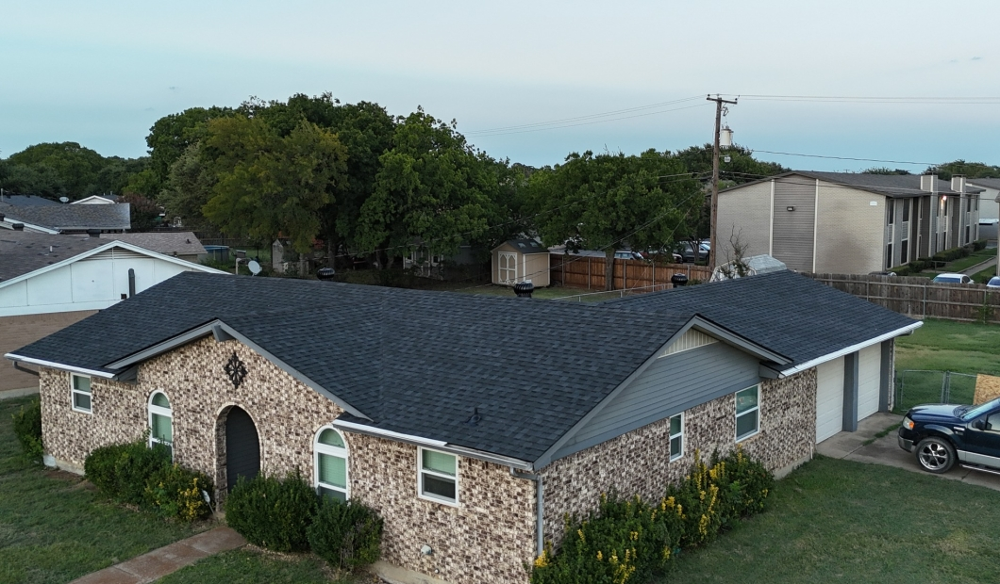

North Richland Hills, TX Roof Aging: When to Repair vs. Replace
A clear, age-based decision guide to help NRH homeowners stop throwing money at a roof that has reached the end of its service life.

The North Richland Hills housing stock includes thousands of homes built between the 1970s and the 1990s, and a significant portion of them are on their second or third roof. When a leak appears or hail strikes, the question homeowners face is whether to patch the problem or replace the entire system. Getting that decision wrong is expensive either way: replacing a roof that could have been repaired wastes money, while repairing a roof that needs replacement creates an endless cycle of calls to a contractor who cannot permanently fix what is fundamentally a worn-out system.
The Age-Based Decision Matrix
Roof age is the single most important variable in the repair-versus-replace decision. Standard three-tab asphalt shingles installed in the 1980s and 1990s carry a 20-to-25-year rated lifespan. Architectural (dimensional) shingles installed after roughly 2000 are rated for 25 to 30 years, with impact-resistant versions stretching to 40 years. In the DFW climate, with its combination of intense UV exposure, hailstorms, and temperature swings exceeding 100 degrees Fahrenheit, actual service life tends to run 20 to 30 percent shorter than manufacturer ratings.
Under 10 Years Old
If your NRH roof is less than a decade old and has localized damage from a storm event, repair is almost always the right call. The underlying system is in good condition, and targeted replacement of damaged shingles or a small section will restore performance without the cost of a full replacement. Ensure the repair uses shingles from the same manufacturer's line and as close to the original color run as possible.
10 to 15 Years Old
At this age range, the decision depends on the extent of damage relative to total roof area. If the affected area is less than 25 percent of the total roof surface, repair is still reasonable. If you are already seeing widespread granule loss in gutters, curling shingle edges, or multiple small leaks appearing in different locations, a replacement consultation is worthwhile to avoid compounding repair costs.
15 to 20 Years and Beyond
Once a standard asphalt roof passes 15 years in the North Texas climate, the repair calculus shifts heavily toward replacement. Underlying felt paper and decking exposure, shingles that have lost most of their granule coating, and dried-out sealant strips all indicate a system approaching the end of its useful life. Repairing a 20-year-old roof is often the roofing equivalent of replacing a timing belt on a car with a seized engine.
The 50% Rule and Insurance Implications
Most Texas homeowner insurance policies and many building codes apply a version of the 50% rule: if repair costs exceed 50% of replacement value, a full replacement is required or strongly incentivized. More practically, when a storm-damage insurance claim is filed on an aging roof, adjusters will calculate actual cash value (ACV) rather than replacement cost value (RCV) if the roof is past a certain age, often 15 to 20 years. This means the insurance payment may not cover a repair, let alone a replacement, if depreciation is significant. Understanding your policy's RCV versus ACV provisions before you file a claim is critical; contact your agent before committing to any work.
Multiple Repair History: When Enough Is Enough
If your NRH home has had three or more separate roofing repairs in the past five years, the cost trajectory is clear. Each repair addresses a symptom, not the underlying aging of the system. Keeping a record of every roofing invoice is useful here: when the cumulative repair cost approaches 40 to 50 percent of a full replacement quote, the economics of continued repair deterioration become undeniable. A complete replacement resets that repair clock to zero and typically comes with a new manufacturer warranty.
Energy Efficiency Gains from Replacement
An often-overlooked dimension of the repair-replace decision is energy performance. Older roofing systems installed before the widespread availability of cool-roof and impact-resistant technology offer none of the energy savings that modern products provide. Upgrading to an Energy Star-rated impact-resistant shingle can reduce attic temperatures by 10 to 15 degrees Fahrenheit during North Texas summers, meaningfully lowering cooling costs. Combined with proper attic ventilation improvements during the replacement, some NRH homeowners see cooling bill reductions of 15 to 20 percent. See our guide on residential roofing options for more detail on energy-efficient materials.
Cost Comparison: Repair vs. Replace
A localized shingle repair on an NRH home typically costs $350 to $900. A full residential roof replacement for a 2,000-square-foot home runs $8,000 to $16,000 depending on material choice and roof complexity. The break-even math: if you need two or more repairs per year at $500 to $800 each, you are spending $1,000 to $1,600 annually on a roof that is still aging. A replacement amortized over 25 years works out to roughly $400 to $640 per year, with no repair calls and with the energy savings and insurance premium reductions that accompany a new roof.
Financing Options for NRH Homeowners
The upfront cost of replacement is the primary reason many homeowners keep repairing rather than replacing. SkyGuard Roofing Solutions offers flexible financing plans that allow qualified homeowners to spread replacement costs over 12 to 60 months. In many cases, the monthly financing payment is less than the annualized cost of recurring repairs plus the energy savings generated by the new system. Our team can walk you through the numbers during a free consultation.
If you are unsure where your NRH roof stands, a free professional inspection is the right starting point. We will document the current condition with photos, provide an honest repair-or-replace recommendation, and give you a detailed quote for both options so you can make an informed decision. Reach us at (682) 330-5088 or office@skyguardrs.com.
Get an Honest Repair vs. Replace Assessment
Our North Richland Hills roofing experts will give you a straightforward recommendation with no pressure to replace what can be repaired.